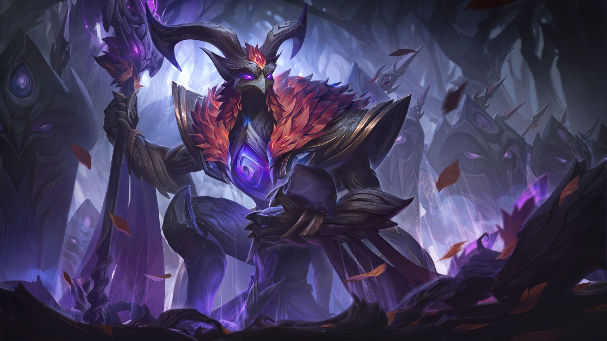
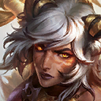
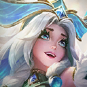
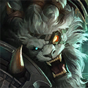

롤토체스 추천메타 요정 트리스타나 덱, 18.5 상향 뒤 성적
롤토체스 추천메타로 요정 트리스타나 덱을 올려도 되는지 궁금하셨다면, 제 결론은 지금 당장 믿고 올릴 덱은 아니고 요정 상징이 나온 판에서 시도해 볼 만한 소수 덱이라는 거예요. 점유율 1.20%라 표본이 작아서 값도 움직이고요. 1위 비율은 19.5%로 돌거북 덱보다 높지만 4등 이내 비율은 52.8%로 큰 덱 두 곳의 55.3%보다 낮아요. 세트18 패치 18.5(10월 21일 수요일)에서 트리스타나와 요정이 같이 상향된 뒤라 바뀐 수치부터 짚어 볼게요. 숫자는 롤체지지 마스터 이상 최근 이틀 기록(10월 26일 월요일 기준)이라 시간이 지나면 조금씩 달라질 수 있어요.

18.5 패치노트 대표 이미지예요.
이미지 출처: 라이엇 공식 패치노트 · 네이버 본문엔 받아서 재업로드 권장
롤토체스 추천메타 요정 트리스타나, 18.5에서 바뀐 수치
18.5에서 트리스타나는 스킬이 더 빨리 터지고 더 세게 들어가도록 바뀌었고, 요정 특성은 체력 회복량이 오르면서 후반 나비정령 기준이 낮아졌어요.
| 항목 | 18.5 이전 | 18.5 이후 |
|---|---|---|
| 트리스타나 마나 | 0/60 | 0/50 |
| 스킬 중 기본 공격당 피해(1/2/3성, 공격력 비례) | 공격력 10/15/25 | 공격력 12/18/28 |
| 요정 2단계 체력 회복량 | 2.5% | 3% |
| 요정 4단계 체력 회복량 | 4% | 5% |
| 나비정령 기준 4번째 | 30,000 | 25,000 |
| 나비정령 기준 5번째 | 70,000 | 60,000 |
| 나비정령 기준 6번째 | 110,000 | 100,000 |
공식 개발자 코멘트를 풀어 보면, 트리스타나는 특성과 핵심 아이템이 갖춰진 뒤부터 전장의 주요 위협 대상으로 떠오를 거라고 봤어요. 요정은 지난 패치의 상향이 보수적이었다는 판단 아래 체력 회복량에 힘을 싣고 후반 황금 나비정령 기준을 낮췄다고 하고, 특히 라칸과 릴리아에게 도움이 된다는 설명도 붙었어요.
요정 특성이 어떻게 굴러가는지는 이 세 줄이면 돼요.
- 아군의 피해, 체력 회복, 보호막이 나비정령을 끌어들여요.
- 요정 챔피언은 나비정령 하나마다 공격력과 주문력을 얻어요.
- 체력이 절반 아래로 떨어지면 나비정령 하나마다 체력을 회복해요.
요정 상징 아이콘이에요.
이미지 출처: 라이엇 게임 데이터(CommunityDragon) · 네이버 본문엔 받아서 재업로드 권장
요정은 2~3단계가 브론즈, 4단계부터 골드로 켜지고, 요정 상징은 뒤집개와 B.F. 대검을 합쳐 만들어요. 패치 전 점유율과 순위는 몰라서 이 상향이 성적을 올렸는지는 말씀드릴 수 없네요. 아래 숫자는 어디까지나 지금 값이에요.
요정 트리스타나 덱 두 종, 핵심 유닛과 아이템 비교
롤체지지에는 이름이 같은 요정 트리스타나 덱이 두 종 올라와 있는데, 트리스타나를 중심에 둔 쪽이 점유 1.20%, 렝가를 핵심으로 세운 쪽이 0.61%예요. 편하게 앞의 것을 덱A, 뒤의 것을 덱B라고 부를게요.
덱A 핵심 유닛과 아이템
| 유닛 | 아이템 |
|---|---|
| 트리스타나(3코스트) | 거인 학살자 · 구인수의 격노검 · 마법공학 총검 |
 시비르 | 요정 상징 · 최후의 속삭임 · 붉은 덩굴정령 |
| 애쉬(5코스트) | 무한의 대검 · 쇼진의 창 |
 릴리아(4코스트) | 크라운가드 · 가고일 돌갑옷 · 수호자의 맹세 |
이미지 출처: 라이엇 게임 데이터(CommunityDragon) · 네이버 본문엔 받아서 재업로드 권장
특성은 요정 4(골드), 에메랄드 성위 1(골드), 사냥꾼 3(실버)이 앞에 서고, 날렵이 3에 엄호대·선봉대·전쟁기계·원시 2단계가 브론즈로 따라와요. 에메랄드 성위는 아군 한 명을 끌어서 타릭과 이어 주면 그 아군이 타릭의 스킬에서 강한 추가 효과를 얻는 특성인데요, 덱A에는 그 타릭이 들어 있어요. 그 밖에 나르, 라칸, 람머스, 타릭, 바이가 같이 들어가는데, 공식 코멘트가 짚은 라칸과 릴리아도 둘 다 이 구성에 있어요.
덱B 핵심 유닛과 아이템
| 유닛 | 아이템 |
|---|---|
 렝가 | 요정 상징 · 밤의 끝자락 · 구인수의 격노검 |
| 트리스타나 | 구인수의 격노검 · 마법공학 총검 · 크라켄의 분노 |
| 시비르 | 적응형 투구 · 최후의 속삭임 · 붉은 덩굴정령 |
| 람머스 | 덤불 조끼 · 가고일 돌갑옷 · 정령의 형상 |
이미지 출처: 라이엇 게임 데이터(CommunityDragon) · 네이버 본문엔 받아서 재업로드 권장
덱B는 요정 4, 경쟁자 1, 에메랄드 성위 1(골드), 날렵이 3이 앞에 서고, 엄호대·사냥꾼·선봉대·전쟁기계·원시가 각각 2단계 브론즈로 따라와요. 두 덱 모두 요정 상징을 쓰고 트리스타나에게 구인수의 격노검과 마법공학 총검을 주는 건 같은데, 나머지 한 칸에는 덱A가 거인 학살자를, 덱B가 크라켄의 분노를 얹어요.
롤토체스 추천메타 큰 덱과 숫자로 비교하면
두 덱 모두 점유율이 낮다 보니 큰 덱과 나란히 놓으면 덱A는 1위 비율에서만 돌거북 덱을 앞서요. 비교 대상은 점유 1위 협곡야수 돌거북과 2위 협곡야수 드레이븐이에요. 덱A는 전체 41개 메타덱 중 20위권 밖이고요.
| 덱 | 점유율 | 1위 비율 | 4등 이내 | 평균 등수 |
|---|---|---|---|---|
| 덱A 요정 트리스타나 | 1.20% | 19.5% | 52.8% | 4.35 |
| 덱B 렝가 핵심 | 0.61% | 15.1% | 44.9% | 4.73 |
| 협곡야수 돌거북 | 15.40% | 13.3% | 55.3% | 4.21 |
| 협곡야수 드레이븐 | 6.22% | 25.3% | 55.3% | 4.04 |
- 덱A의 1위 비율은 돌거북보다 6.2%p 높고 드레이븐보다 5.8%p 낮아요.
- 덱A의 4등 이내 비율은 큰 덱 두 곳보다 2.5%p 낮고, 평균 등수도 숫자가 더 커요.
- 덱B는 세 지표 모두 덱A보다 나빠요.
1위 비율은 한 판에서 1등으로 끝난 비율이고, 4등 이내는 8명 중 상위 절반에 든 비율이에요. 표본은 덱A 5,097판, 덱B 2,608판으로 전체 424,937판의 일부라 하루 이틀 사이에도 값이 움직이거든요.
요정 트리스타나 덱, 어떤 판에 맞고 뭘 조심할까요
지금 숫자로는 1위 한 번을 노리는 판에 덱A가 후보가 되고, 4등 안쪽을 꾸준히 지키는 판에는 큰 덱 쪽 근거가 더 탄탄해요.
판 상황별로 이렇게 골라 보세요
· 요정 상징이 손에 들어왔고 트리스타나와 시비르가 보인다면 덱A를 볼 만해요. 두 덱 모두 요정 상징이 핵심 아이템이거든요.
· 1위가 목표라면 덱A 쪽이에요. 1위 비율이 돌거북 덱보다 높아요.
· 순위 방어가 먼저라면 4등 이내 비율과 평균 등수가 더 좋은 큰 덱이 나아요.
· 렝가를 중심에 둔 덱B는 일부러 고를 근거가 약해요. 세 지표가 모두 덱A보다 나쁘네요.
조심할 점은 세 가지예요. 점유율이 낮은 덱이라 표본이 작고, 조회할 때마다 바뀌는 값이라 내일 다시 보면 달라질 수 있어요. 상향 전 수치가 없어서 이번 패치 덕분에 올랐다고도 말하기 어렵고요. 제 판단으로는 이 덱이 지금 당장 믿고 올릴 추천메타라기보다, 요정 상징이 나온 판에서 한 번 시도해 볼 만한 선택지 정도로 보여요.
자주 묻는 질문
Q. 트리스타나 스킬은 어떤 효과인가요?
트리스타나의 스킬은 대상에게 폭발 화약을 4초 동안 붙이는 효과인데요, 붙어 있는 동안은 사거리 제한이 없고 공격 속도를 60% 얻어요. 4초가 지나면 화약이 터지면서 2칸 안 적들에게 공격력에 비례한 물리 피해 175/265/420(1/2/3성)이 들어가고, 스킬이 켜져 있던 동안 기본 공격마다 붙은 공격력 비례 피해 12/18/28이 여기에 더해져요. 공식 설명은 이 피해를 «나누어 입힌다»고만 적어 둬서, 적 한 명당 정확히 얼마씩인지는 알 수 없어요. 화약이 붙은 적이 죽으면 새 대상에게 다시 붙어요.
Q. 10월 23일 18.5b에서 트리스타나나 요정도 바뀌었나요?
아니에요. 10월 23일(금) 추가 패치 18.5b에는 덩굴정령 적중 시 체력 회복이 5%에서 4%로 내려가는 변경 등이 들어갔지만, 트리스타나와 요정 항목은 없었어요.
Q. 요정은 2단계와 4단계 중 어느 쪽이 성적이 좋았나요?
요정 특성 통계는 덱 통계와 표본이 따로 잡혀서 331,152판 기준인데요, 요정 2단계는 7.40%의 판에서 쓰여 평균 등수 4.69, 4단계는 3.12%의 판에서 쓰여 4.42였어요. 숫자로는 4단계가 낫지만 쓰인 비율은 절반 아래라서, 단계가 높을수록 성적이 좋다고 단정하긴 어려워요.
✔ 롤토체스 같이 보기 좋은 내용
· 롤토체스 기원자 아리 조합 아이템 정리, 특성 빌드까지 한 번에
· 롤토체스시즌18 싸움꾼 마스터 이 렝가덱 사용법 공략
· 롤토체스 사냥꾼 시비르 덱 추천 — 점유율 2위 강세덱, 특성 9개 한 번에 켜는 조합
참고한 곳
· 라이엇게임즈 공식 — 전략적 팀 전투 패치 18.5 노트 (조회 2026.10.26)
· 롤체지지 패치노트 — 18.5b 변경 내역 (공식 아님, 조회 2026.10.26)
· 롤체지지 덱·특성 통계 — 마스터 이상 최근 2일, 공식 아님, 조회 2026.10.26